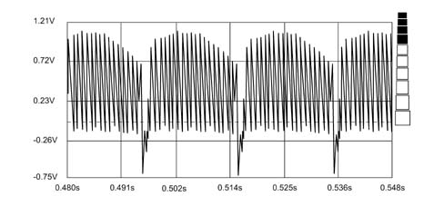
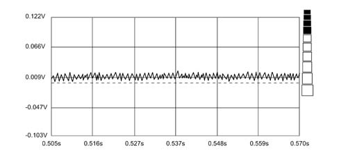

5580HA CHECK OPERATION OF OVERTAKING SENSOR CONTROL UNIT MODULE
- Path
- Test > 55 ELECTRICAL EQUIPMENT > 5580 SPECIAL ACCESSORIES > 5580H PARKING OBSTACLE DETECTION DEVICE > 5580HA CHECK OPERATION OF OVERTAKING SENSOR CONTROL UNIT MODULE
- Kind
- test / check procedure
- Applies to
- engines: 2.0 16V; all production periods
- Interactive page
- https://sloeber94.github.io/elrnDB-fDct/en/#/244000586
Applies to: engines: 2.0 16V; all production periods
With the Examiner in Instrument mode and set to the Voltmeter function, check that the TV camera power supply (battery voltage +12 Volt) is present at the Overtaking Sensor control unit output.
Connect the positive contact (red) of the Examiner to the central coaxial lead wire leading from the TV camera and the negative contact (black) to the vehicle earth.
Turn on the Examiner, select Instrument mode and the Voltmeter function, then select full scale deflection of 20 volt and a time base of 1 second (measurement to be carried out with the TV camera activated and the lens covered by a dark cloth). Then capture the coaxial cable signal graph.
Enlarge the resulting voltage graph until the shape resembles the drawing shown below.

Check that the voltage and time values are similar to those shown in the drawing.
If the waveform is not as described, this may be due to several possible faults:
If the recorded graph trace is very close to zero (fluctuating from - 0.15 Volts to + 0.15 Volts) as shown in the following drawing.

The line (i.e. the coaxial cable from the TV camera) is short-circuited between the central conductor and the external earth or the TV camera is faulty.
If the recorded voltage graph trace is far from zero (voltage fluctuates between -20 Volts and +20 Volts). The line (i.e. the coaxial cable from the TV camera) is in open circuit or the central conductor and/or earth are not connected or the TV camera is faulty.
Carry out the same test at the TV camera terminals (without opening the external case) to rule out possible wiring faults.